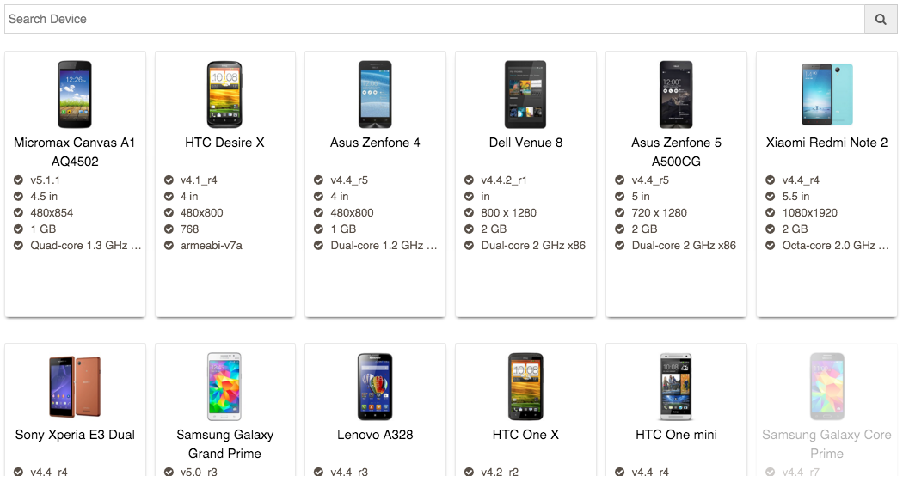

4. Manual Testing¶

Once you have selected the right build, click on the Manual tile to start executing your manual tests. Clicking on Manual tile, shows a list of devices that are available in the device cloud. You can either select your device by finding it and clicking on it.
Alternatively, you can also filter devices by platform version, screen size, hardware configuration e.g. Memory and CPU. Once you have identified the device that you wish to test on, simply click on its Select button.
Upon clicking Select, the relevant device is requisitioned, cleaned up and made ready for use. Once the device is ready for use, the selected build is installed on the device and is ready for testing.
The Manual test screen consists of three main parts

Device Screen: This is the screen of the device that you wish to test on. You can perform various gestures like tap, swipe, scroll with the help of mouse/trackpad and keyboard. Performance Graph: This section consists of three subsections - CPU, Memory and Network. Each of these sections display metrics specific to the app. Monitoring these metrics helps a tester correlate the action that has been performed on the app to the parameters being monitored e.g. how does the tap on a button affect the Memory usage or how does a call to a server affect the network usage. Test Configuration Header: This section provides options to enhance the tests that are being performed. You have options to Simulate a network type e.g. a 2G network or an HSPA network. These options simulate conditions like bandwidth, packet corruption and latency, drops etc. Simulate a location: You can provide a location that you wish to simulate on your device. Device Orientation: Change device orientation to test app performance in landscape and portrait modes. Logs: User can view logs specific to the app being tested to monitor various aspects of the app’s working ANR Logs: User can view ANR logs to view and investigate any ANR event caused by your app. Screen size: You can also control the size of the screen for better testing using the zoom slider
Once your test is complete, you can click on End Session to exit the test session.